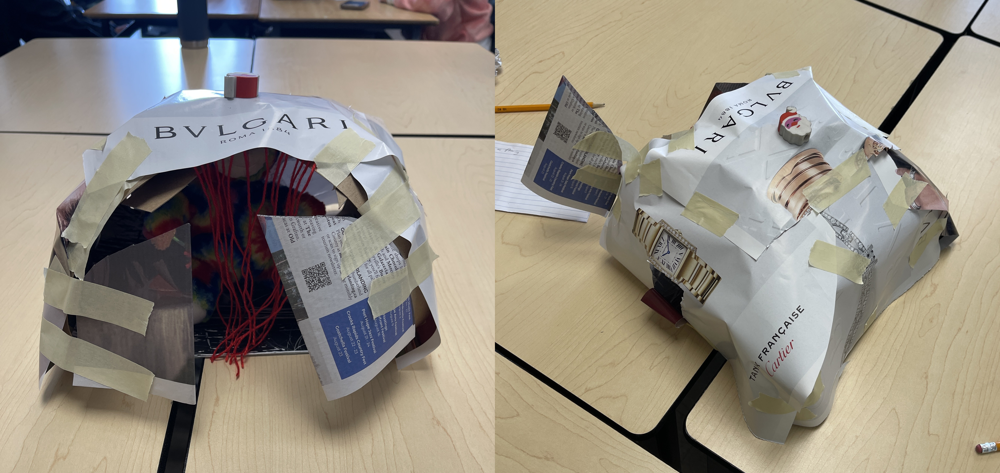
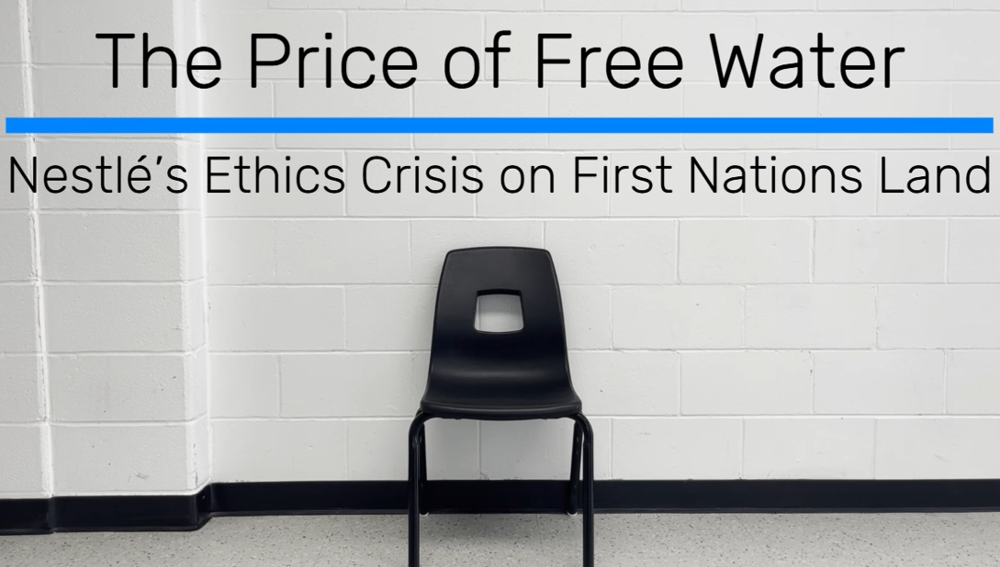
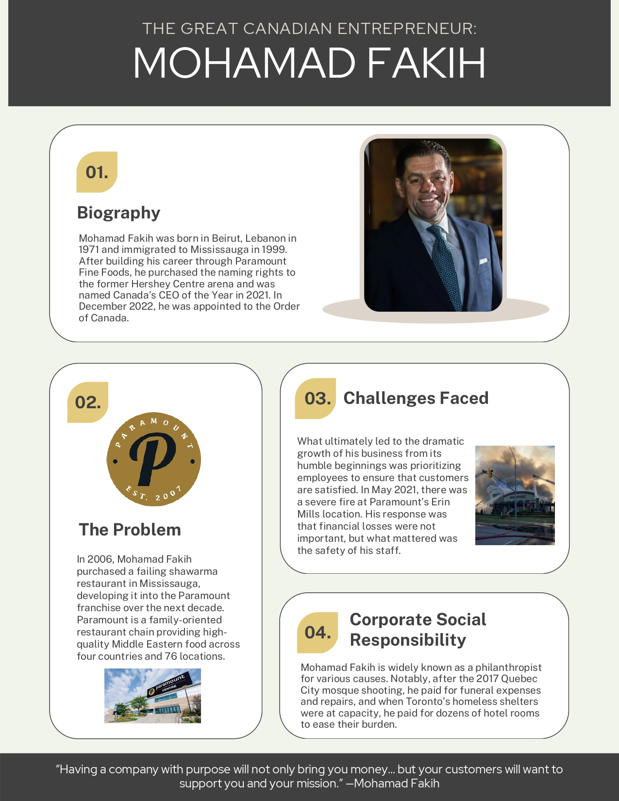
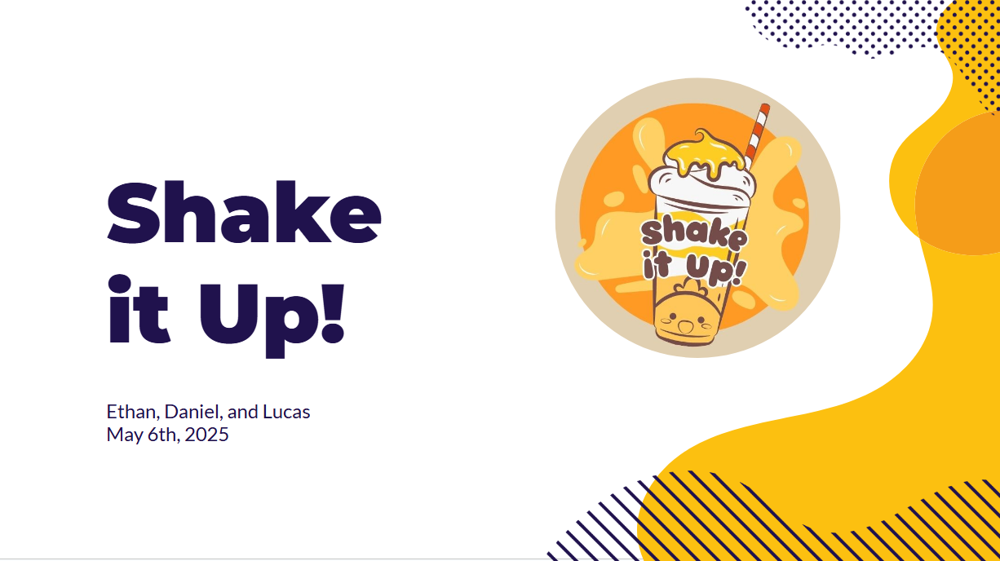

This collaborative activity placed an emphasis on project management, one of the most elementary components of business. By finding the most optimal way to leverage our planning time, fostering open communication in our group, and converting our plans and ideas to an actual, deployable product, we learned the importance of accurately following the project management process. In terms of group dynamics, we got to experiment with varying leadership styles and think on our feet to resolve any discrepancies between our original plans and the final product. There were several other takeaways from this activity, such as transitioning from planning to execution, delegating tasks, and making effective decisions with regard to material resources. If I had to do this activity again, I would be swift and intentional with planning to save time and make use of all the resources we were given, but it was successful nonetheless.

By conducting in-depth research into an ethical dilemma in the world of Canadian business, I found several insights that highlight the balance between profits, the environment, and land ownership rights. One example is that expenses are oftentimes reduced with unsustainable practices, but the consequences are not worth short-term profits. In the case of Nestlé, they were forced to sell their Canadian bottled water business to another company which soon shut the operation down completely. Overall, I learned the importance of decision-making in business and the impacts leaders have on a corporation’s future. An important skill that I honed during this assignment was to conduct research critically, evaluating the trustworthiness of each source. The only minor improvement I could have made was to speed up the filming process for our video to leave time for editing.

Through creating an infographic about the life of Mohamad Fakih, the founder and CEO of Paramount Fine Foods, I discovered the results of prioritizing human resources and the potential for philanthropy in business. As arguably one of the most successful people in Mississauga, Mohamad Fakih built Paramount Fine Foods by making the purpose of his business apparent in customer experiences and became well-known for his CSR. The entrepreneurial skill of resilience is also central to his success, since Paramount started as a single failing location and he faced a severe fire.

This assignment provided me with the opportunity to explore marketing techniques and how they relate to human psychology. Each of my advertisements were designed with purpose, using the Attention, Interest, Desire, Action technique, containing a tagline to capture the audience’s attention, an offer that allowed them to develop a favourable disposition to our product, and a call to action. I had absolutely no experience in designing promotional tools, but I found the process very straightforward using Canva templates. In the end, this was a successful application of my previously unknown abilities in marketing, since my venture group decided to use several of my promotional tools, such as the one in the image shown above, as advertisements.

The Venture Pitch illustrated my presentation skills and my ability to persuade the public about the feasibility and impacts behind my ideas. This is an indispensable part of success in business, so it aligns with my goals that I enjoy speaking. Within the pitch, I conveyed statistics and other raw data in a way that provides valuable insights, I simplified financial concepts to bring perceived value to my business plan, and I recognized the strengths, weaknesses, opportunities, and threats to our venture. There was a substantial amount to be learned from this experience, such as strategies for coordinating with co-presenters and the importance of rehearsal before presentations. Although I have no regrets about this presentation, I would have been more convincing and made a personal appeal to the audience to better simulate the experience of talking to investors.